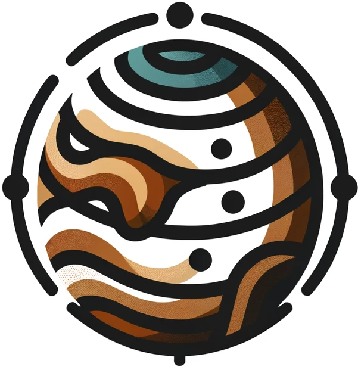

Photo Gallery



Communities know their streets need change but have no way to independently create the technical maps that city planners need to move projects forward.
We're developing a free and open-source platform where community members can propose and vote on bike lane, sidewalk, roadway, parking, and greenway improvements following NYC Street Design Manual guidelines.
Each proposal generates downloadable design drawings and maps from community-driven input that anyone can submit to DOT, share with community boards, or use for local organizing.
Eric Bolton is a software engineer specializing in data visualization, collaborative platforms, and community consensus tools.
Brook Constantz is a landscape ecologist with a background in urban forestry, geographic information systems, and green infrastructure.